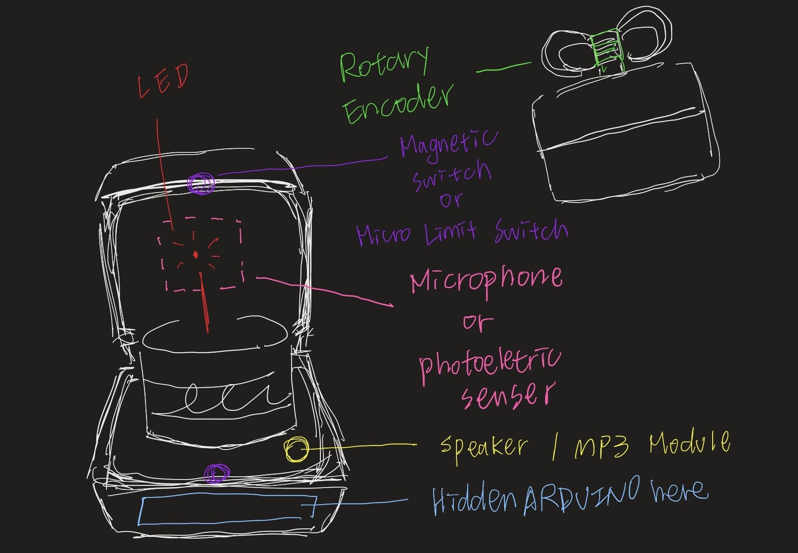
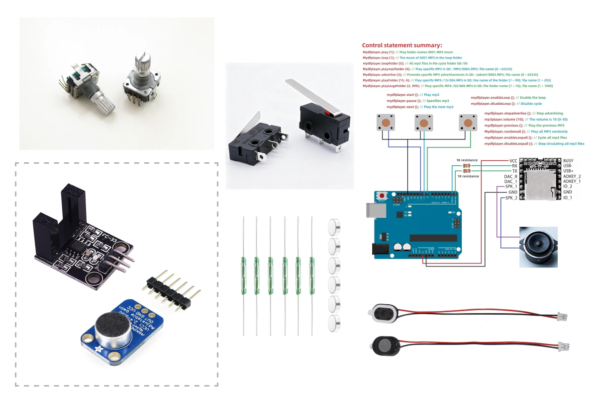
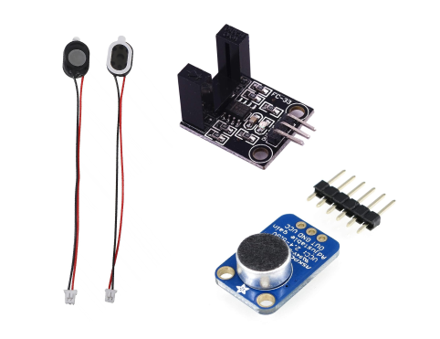

Birthday Music Box
CONCEPT
Rotary Encoder — Wind-up Mechanism
The rotary encoder works like the winding key of a music box.
Turning it builds up energy, which controls the music.
I plan to design it in the shape of a ribbon bow.
Micro Limit Switch / Magnetic Switch — Lid Detection
The switch detects whether the music box is open or closed and controls the LED.
I'm considering two options:
- Micro Limit Switch:
Detects whether the lid is open or closed through physical contact. The lid presses the switch when it closes.
- Magnetic Switch :
Uses a magnet to detect whether the lid is open or closed without physical contact.
LED — Candle Flame
The LED represents the flame of a birthday candle.
Microphone / Photoelectric Sensor — Blow Detection
I'm currently exploring two ways to detect blowing:
- Microphone :
Detect the sound of someone blowing. -
Photoelectric Sensor :
Use a lightweight piece of material that moves when someone blows on it. The sensor detects this movement.
Speaker / MP3 Module — Music Playback
The speaker and MP3 module play the Happy Birthday song.
Arduino — Main Controller
The Arduino will be hidden inside the base of the box to control all the components.

sketch
partsTEST
Micro Limit Switch / Magnetic Switch — Lid Detection
// set pin
const int switchPin = 4;
const int ledPin = 6;
void setup() {
Serial.begin(9600);
pinMode(switchPin, INPUT_PULLUP);
pinMode(ledPin, OUTPUT);
}
void loop() {
int switchState = digitalRead(switchPin);
//CLOSE BOX = PIN LOW
if( switchState == LOW){
digitalWrite(ledPin, HIGH);
} else{
digitalWrite(ledPin, LOW);
}
delay(100);
}
Rotary Encoder — Wind-up Mechanism
Simulates winding up a music box to store energy.
// set pin
const int encoderPin1 = 2; //pin2 = gnd
const int encoderPin3 = 3;
// set power
int power = 0;
// let powerMax = 20;
int encoderPin1StateLast;
void setup() {
Serial.begin(9600);
//set pin
pinMode(encoderPin1, INPUT_PULLUP);
pinMode(encoderPin3, INPUT_PULLUP);
encoderPin1StateLast = digitalRead(encoderPin1);
}
void loop() {
// rotary?
int encoderPin1StateNow = digitalRead(encoderPin1);
int encoderPin3StateNow = digitalRead(encoderPin3);
if(encoderPin1StateNow != encoderPin1StateLast){
power++;
}
encoderPin1StateLast = encoderPin1StateNow;
Serial.print("Power: ");
Serial.println(power);
}
Blow Detection Test — Speaker as a Microphone
I tried using a small speaker to detect blowing, but it didn't work reliably.
The signal generated by the speaker was too weak for the Arduino to detect directly.
An amplifier would be needed to make the signal easier to read.

H3 TITLE
P